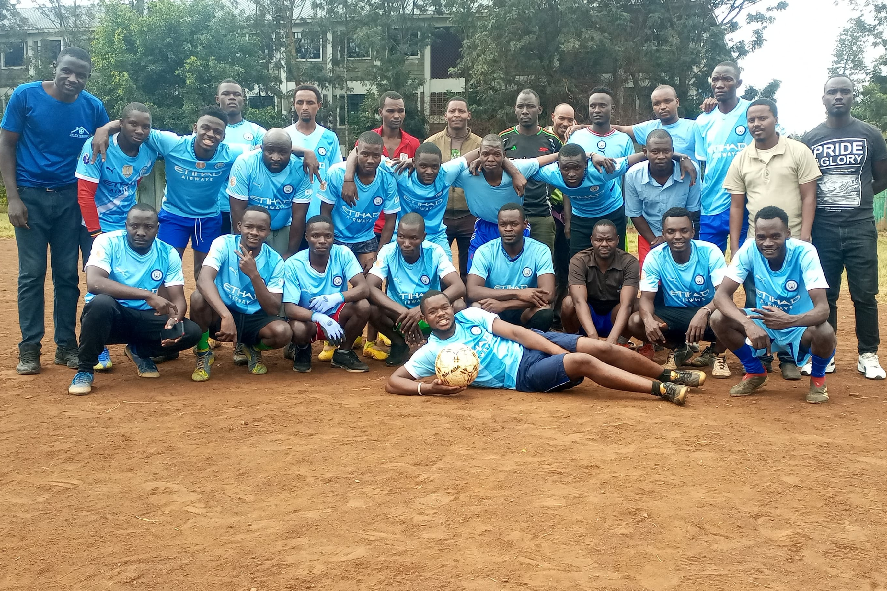

Together We Are Strong
Founded: 2025 | Location: Babadogo | Colors: Blue & Red
About Us
Founded in 2025 and based in Babadogo, Chandaria Converting Football Club (C.C.F.C.) is a passionate team of workmates and friends united by the love of football. We believe in teamwork, dedication, and community spirit on and off the pitch.
